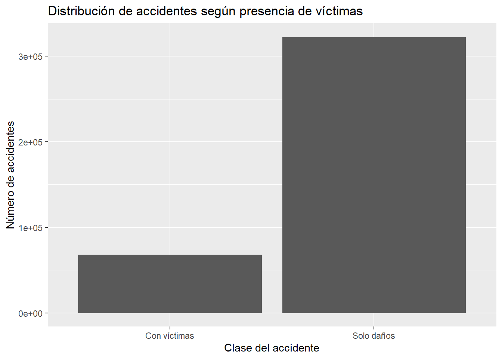
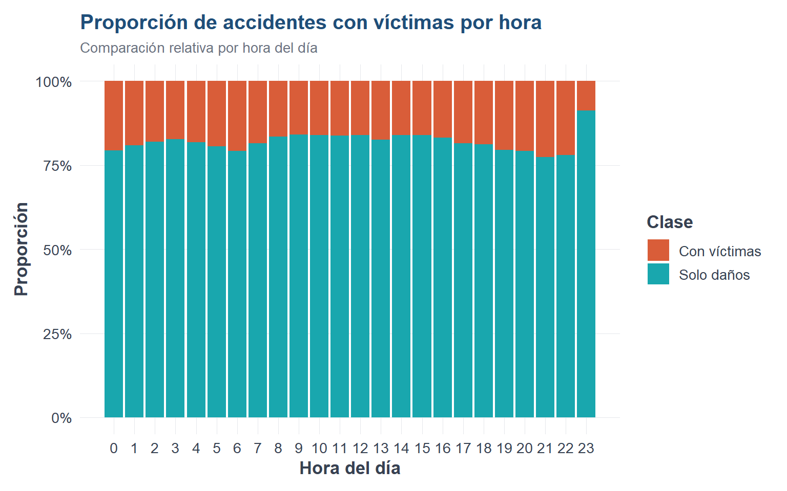
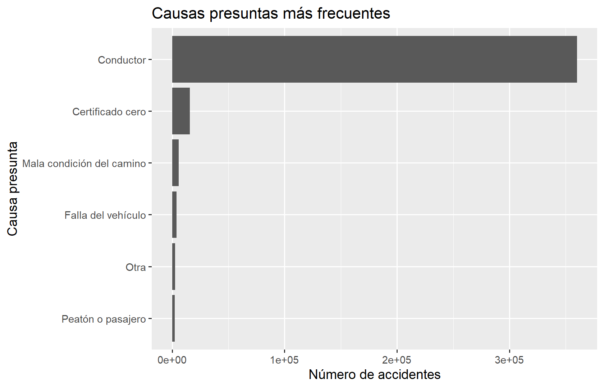
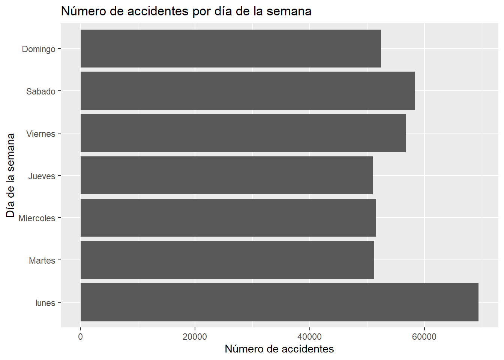
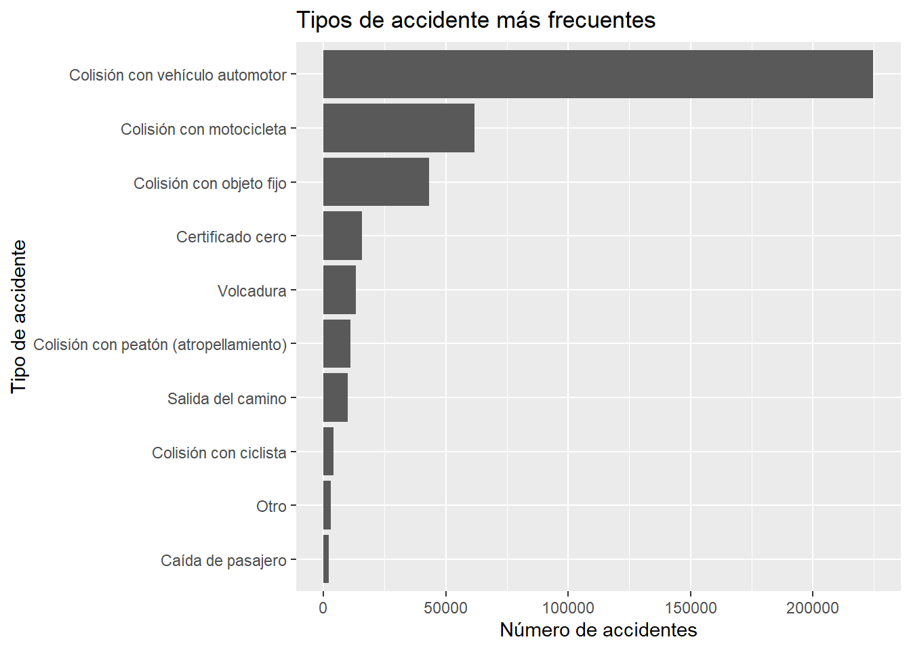
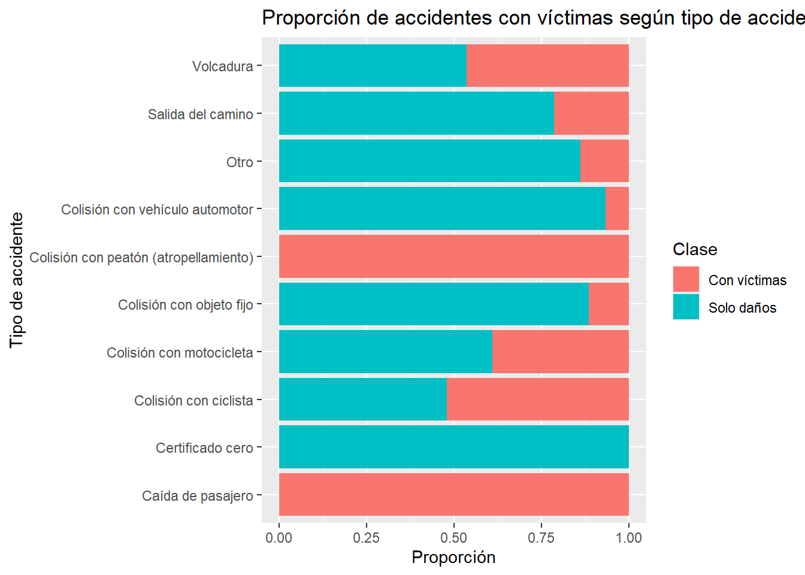
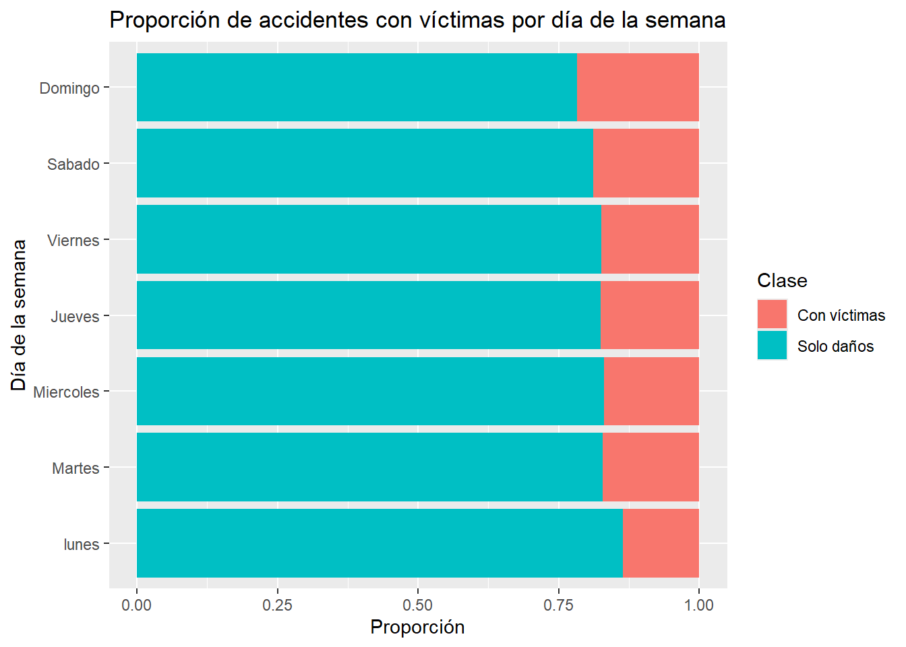

Code
library(readr)
library(dplyr)
library(ggplot2)Al finalizar este capítulo, el lector será capaz de:
ggplot2.Después de preparar los datos, el siguiente paso en un proyecto de aprendizaje automático es explorarlos.
El análisis exploratorio de datos, también conocido como Exploratory Data Analysis o EDA, consiste en revisar, resumir, visualizar e interpretar los datos antes de construir modelos.
Esta etapa es fundamental porque permite responder preguntas como:
Antes de aplicar algoritmos como regresión logística, árboles de decisión o bosques aleatorios, necesitamos conocer la base con la que vamos a trabajar.
Un buen modelo empieza con una buena comprensión de los datos.
En este capítulo utilizaremos los siguientes paquetes:
library(readr)
library(dplyr)
library(ggplot2)Si alguno no está instalado, puedes instalarlo con:
install.packages(c("readr", "dplyr", "ggplot2"))En el capítulo anterior guardamos una base preparada llamada:
atus_ml_preparado.csvPrimero definimos la ruta del archivo.
ruta_atus_ml <- "datos/atus_ml_preparado.csv"Verificamos si el archivo existe:
file.exists(ruta_atus_ml)[1] TRUEAhora cargamos la base.
if (file.exists(ruta_atus_ml)) {
atus_ml <- read_csv(
ruta_atus_ml,
show_col_types = FALSE
)
print("Base preparada cargada correctamente.")
} else {
atus_ml <- NULL
print("No se encontró el archivo datos/atus_ml_preparado.csv. Ejecuta primero el capítulo 2.")
}[1] "Base preparada cargada correctamente."Después de cargar la base, haremos algunos ajustes para que las tablas y gráficas sean más claras.
Primero convertimos la hora del accidente a una variable numérica. Esto permitirá ordenar correctamente las horas de 0 a 23.
También ordenamos los días de la semana en su orden natural.
if (!is.null(atus_ml)) {
atus_ml <- atus_ml |>
mutate(
ID_HORA_NUM = as.numeric(ID_HORA),
DIASEMANA = factor(
DIASEMANA,
levels = c(
"lunes",
"Martes",
"Miercoles",
"Jueves",
"Viernes",
"Sabado",
"Domingo"
)
),
accidente_con_victimas = factor(
accidente_con_victimas,
levels = c("Con víctimas", "Solo daños")
)
)
}La variable ID_HORA_NUM será útil para gráficas y resúmenes numéricos.
La variable DIASEMANA se ordenó manualmente porque, si no lo hacemos, R puede mostrar los días en orden alfabético o en el orden en que aparecen en la base.
Revisamos las dimensiones de la base:
if (!is.null(atus_ml)) {
dim(atus_ml)
}[1] 390627 7El primer número corresponde al número de accidentes registrados.
El segundo número corresponde al número de variables disponibles para este primer análisis.
Ahora observamos los primeros registros:
if (!is.null(atus_ml)) {
head(atus_ml)
}# A tibble: 6 × 7
accidente_con_victimas MES ID_HORA DIASEMANA TIPACCID CAUSAACCI ID_HORA_NUM
<fct> <chr> <chr> <fct> <chr> <chr> <dbl>
1 Solo daños 01 02 lunes Colisión… Conductor 2
2 Solo daños 01 03 lunes Colisión… Conductor 3
3 Con víctimas 01 04 lunes Colisión… Conductor 4
4 Solo daños 01 05 lunes Colisión… Conductor 5
5 Solo daños 01 06 lunes Colisión… Conductor 6
6 Con víctimas 01 07 lunes Colisión… Conductor 7También revisamos los nombres de las variables:
if (!is.null(atus_ml)) {
names(atus_ml)
}[1] "accidente_con_victimas" "MES" "ID_HORA"
[4] "DIASEMANA" "TIPACCID" "CAUSAACCI"
[7] "ID_HORA_NUM" La función str() permite revisar el tipo de cada variable.
if (!is.null(atus_ml)) {
str(atus_ml)
}tibble [390,627 × 7] (S3: tbl_df/tbl/data.frame)
$ accidente_con_victimas: Factor w/ 2 levels "Con víctimas",..: 2 2 1 2 2 1 1 2 2 2 ...
$ MES : chr [1:390627] "01" "01" "01" "01" ...
$ ID_HORA : chr [1:390627] "02" "03" "04" "05" ...
$ DIASEMANA : Factor w/ 7 levels "lunes","Martes",..: 1 1 1 1 1 1 1 1 1 1 ...
$ TIPACCID : chr [1:390627] "Colisión con vehículo automotor" "Colisión con objeto fijo" "Colisión con peatón (atropellamiento)" "Colisión con objeto fijo" ...
$ CAUSAACCI : chr [1:390627] "Conductor" "Conductor" "Conductor" "Conductor" ...
$ ID_HORA_NUM : num [1:390627] 2 3 4 5 6 7 12 13 18 20 ...En esta base tenemos una variable respuesta:
accidente_con_victimasy varias variables predictoras:
MES
ID_HORA
DIASEMANA
TIPACCID
CAUSAACCILa variable respuesta indica si el accidente fue clasificado como:
Con víctimas
Solo dañosLa primera variable que debemos analizar es la variable respuesta.
if (!is.null(atus_ml)) {
table(atus_ml$accidente_con_victimas)
}
Con víctimas Solo daños
68108 322519 También podemos calcular proporciones:
if (!is.null(atus_ml)) {
prop.table(table(atus_ml$accidente_con_victimas))
}
Con víctimas Solo daños
0.1743556 0.8256444 Para mostrar los porcentajes de forma más clara:
if (!is.null(atus_ml)) {
round(100 * prop.table(table(atus_ml$accidente_con_victimas)), 2)
}
Con víctimas Solo daños
17.44 82.56 En problemas de clasificación es importante revisar si las clases están balanceadas.
Un conjunto está balanceado cuando las categorías de la variable respuesta aparecen en proporciones similares.
Un conjunto está desbalanceado cuando una categoría aparece con mucha mayor frecuencia que otra.
En esta base se observa un desbalance importante: aproximadamente 82.56% de los accidentes corresponden a solo daños, mientras que 17.44% corresponden a accidentes con víctimas.
Esto será relevante cuando construyamos modelos de clasificación, porque un modelo ingenuo podría predecir siempre “Solo daños” y aun así obtener una exactitud cercana al 82.56%.
Por esa razón, más adelante necesitaremos usar métricas adicionales a la exactitud, como:
Construimos una primera gráfica de barras.
if (!is.null(atus_ml)) {
ggplot(atus_ml, aes(x = accidente_con_victimas)) +
geom_bar() +
labs(
title = "Distribución de accidentes según presencia de víctimas",
x = "Clase del accidente",
y = "Número de accidentes"
)
}
Esta gráfica permite observar visualmente si hay más accidentes con víctimas o más accidentes de solo daños.
Ahora analizamos la variable MES.
if (!is.null(atus_ml)) {
table(atus_ml$MES)
}
01 02 03 04 05 06 07 08 09 10 11 12
31600 32208 33237 32666 34665 31737 30062 31800 31351 33771 34047 33483 Construimos una tabla ordenada por mes:
if (!is.null(atus_ml)) {
accidentes_mes <- atus_ml |>
count(MES) |>
arrange(as.numeric(MES))
accidentes_mes
}# A tibble: 12 × 2
MES n
<chr> <int>
1 01 31600
2 02 32208
3 03 33237
4 04 32666
5 05 34665
6 06 31737
7 07 30062
8 08 31800
9 09 31351
10 10 33771
11 11 34047
12 12 33483Ahora graficamos:
if (!is.null(atus_ml)) {
ggplot(accidentes_mes, aes(x = factor(MES, levels = sort(unique(as.numeric(MES)))), y = n)) +
geom_col() +
labs(
title = "Número de accidentes por mes",
x = "Mes",
y = "Número de accidentes"
)
}
La gráfica de accidentes por mes permite identificar si existen meses con mayor número de accidentes.
En la tabla se observa que mayo presenta el mayor número de accidentes, con 34,665 registros, mientras que julio presenta el menor número, con 30,062 registros. La variación mensual existe, aunque no es extrema.
En un análisis más profundo podríamos preguntarnos:
Por ahora, nuestro objetivo es observar patrones generales.
La variable ID_HORA indica la hora en la que ocurrió el accidente.
Como esta variable puede leerse como texto, usaremos la variable numérica ID_HORA_NUM, creada previamente.
Primero construimos una tabla de frecuencias:
if (!is.null(atus_ml)) {
accidentes_hora <- atus_ml |>
count(ID_HORA_NUM) |>
arrange(ID_HORA_NUM)
accidentes_hora
}# A tibble: 24 × 2
ID_HORA_NUM n
<dbl> <int>
1 0 9143
2 1 7400
3 2 6594
4 3 5694
5 4 4880
6 5 4986
7 6 8034
8 7 15159
9 8 20666
10 9 19486
# ℹ 14 more rowsAhora graficamos:
if (!is.null(atus_ml)) {
ggplot(accidentes_hora, aes(x = ID_HORA_NUM, y = n)) +
geom_col() +
scale_x_continuous(breaks = 0:23) +
labs(
title = "Número de accidentes por hora del día",
x = "Hora del día",
y = "Número de accidentes"
)
}
El análisis por hora puede revelar patrones asociados con la movilidad diaria.
Por ejemplo, podrían aparecer más accidentes:
Este tipo de análisis es útil porque algunas variables temporales pueden ayudar a clasificar la severidad o el tipo de accidente.
Ahora analizamos la variable DIASEMANA.
if (!is.null(atus_ml)) {
accidentes_dia <- atus_ml |>
count(DIASEMANA) |>
arrange(DIASEMANA)
accidentes_dia
}# A tibble: 7 × 2
DIASEMANA n
<fct> <int>
1 lunes 69412
2 Martes 51215
3 Miercoles 51580
4 Jueves 50954
5 Viernes 56708
6 Sabado 58321
7 Domingo 52437Graficamos:
if (!is.null(atus_ml)) {
ggplot(accidentes_dia, aes(x = DIASEMANA, y = n)) +
geom_col() +
coord_flip() +
labs(
title = "Número de accidentes por día de la semana",
x = "Día de la semana",
y = "Número de accidentes"
)
}
El día de la semana puede ser una variable importante.
Podemos preguntarnos:
Estas preguntas serán útiles cuando construyamos modelos de clasificación.
Ahora revisamos la variable TIPACCID.
if (!is.null(atus_ml)) {
accidentes_tipo <- atus_ml |>
count(TIPACCID) |>
arrange(desc(n))
accidentes_tipo
}# A tibble: 13 × 2
TIPACCID n
<chr> <int>
1 Colisión con vehículo automotor 224720
2 Colisión con motocicleta 61869
3 Colisión con objeto fijo 43119
4 Certificado cero 15678
5 Volcadura 13371
6 Colisión con peatón (atropellamiento) 11052
7 Salida del camino 10067
8 Colisión con ciclista 4033
9 Otro 2934
10 Caída de pasajero 2153
11 Colisión con animal 884
12 Incendio 455
13 Colisión con ferrocarril 292Graficamos los tipos de accidente más frecuentes:
if (!is.null(atus_ml)) {
accidentes_tipo_top <- accidentes_tipo |>
slice_max(n, n = 10)
ggplot(accidentes_tipo_top, aes(x = reorder(TIPACCID, n), y = n)) +
geom_col() +
coord_flip() +
labs(
title = "Tipos de accidente más frecuentes",
x = "Tipo de accidente",
y = "Número de accidentes"
)
}
El tipo de accidente puede estar relacionado con la presencia de víctimas.
El tipo de accidente más frecuente es la colisión con vehículo automotor, con 224,720 casos. Le siguen la colisión con motocicleta, con 61,869 casos, y la colisión con objeto fijo, con 43,119 casos.
Esto sugiere que las colisiones entre vehículos concentran una parte muy importante del fenómeno.
Sin embargo, frecuencia no significa necesariamente mayor gravedad. Un tipo de accidente puede ser muy frecuente, pero tener baja proporción de víctimas; otro puede ser menos frecuente, pero más grave en términos relativos.
Por eso más adelante analizaremos proporciones, no solo cantidades absolutas.
Ahora analizamos la variable CAUSAACCI.
if (!is.null(atus_ml)) {
accidentes_causa <- atus_ml |>
count(CAUSAACCI) |>
arrange(desc(n))
accidentes_causa
}# A tibble: 6 × 2
CAUSAACCI n
<chr> <int>
1 Conductor 360051
2 Certificado cero 15678
3 Mala condición del camino 5991
4 Falla del vehículo 3978
5 Otra 2639
6 Peatón o pasajero 2290Graficamos las causas más frecuentes:
if (!is.null(atus_ml)) {
accidentes_causa_top <- accidentes_causa |>
slice_max(n, n = 10)
ggplot(accidentes_causa_top, aes(x = reorder(CAUSAACCI, n), y = n)) +
geom_col() +
coord_flip() +
labs(
title = "Causas presuntas más frecuentes",
x = "Causa presunta",
y = "Número de accidentes"
)
}
La causa presunta del accidente puede aportar información importante para el modelo.
Sin embargo, también debemos tener cuidado: algunas variables pueden estar codificadas de manera muy general o depender del registro administrativo.
Por eso, antes de usar una variable en un modelo, conviene revisar:
Nota didáctica: la categoría “Certificado cero” aparece en algunas variables del conjunto de datos. Antes de usarla en un modelo predictivo, conviene revisar la documentación oficial de la base para entender exactamente qué representa. En esta primera exploración la conservamos, pero en un análisis más cuidadoso podríamos tratarla como una categoría especial.
Ahora cruzamos dos variables:
TIPACCID
accidente_con_victimasPrimero hacemos una tabla de contingencia:
if (!is.null(atus_ml)) {
tabla_tipo_victimas <- table(
Tipo = atus_ml$TIPACCID,
Clase = atus_ml$accidente_con_victimas
)
tabla_tipo_victimas
} Clase
Tipo Con víctimas Solo daños
Caída de pasajero 2153 0
Certificado cero 0 15678
Colisión con animal 267 617
Colisión con ciclista 2100 1933
Colisión con ferrocarril 76 216
Colisión con motocicleta 24135 37734
Colisión con objeto fijo 4895 38224
Colisión con peatón (atropellamiento) 11052 0
Colisión con vehículo automotor 14671 210049
Incendio 6 449
Otro 405 2529
Salida del camino 2144 7923
Volcadura 6204 7167Esta tabla puede ser grande. Para visualizar mejor, trabajamos con los tipos de accidente más frecuentes.
if (!is.null(atus_ml)) {
tipos_top <- atus_ml |>
count(TIPACCID) |>
slice_max(n, n = 10) |>
pull(TIPACCID)
atus_tipo_top <- atus_ml |>
filter(TIPACCID %in% tipos_top)
ggplot(atus_tipo_top, aes(x = TIPACCID, fill = accidente_con_victimas)) +
geom_bar(position = "fill") +
coord_flip() +
labs(
title = "Proporción de accidentes con víctimas según tipo de accidente",
x = "Tipo de accidente",
y = "Proporción",
fill = "Clase"
)
}
La gráfica anterior no muestra cantidades absolutas, sino proporciones.
Esto permite comparar tipos de accidente aunque algunos sean mucho más frecuentes que otros.
Por ejemplo, si un tipo de accidente tiene una proporción alta de “Con víctimas”, podría ser una variable importante para el modelo.
Esta es una de las ideas centrales del análisis exploratorio:
No solo queremos contar datos; queremos encontrar relaciones que ayuden a entender el problema.
Ahora analizamos si la proporción de accidentes con víctimas cambia según la hora.
if (!is.null(atus_ml)) {
ggplot(atus_ml, aes(x = ID_HORA_NUM, fill = accidente_con_victimas)) +
geom_bar(position = "fill") +
scale_x_continuous(breaks = 0:23) +
labs(
title = "Proporción de accidentes con víctimas por hora",
x = "Hora del día",
y = "Proporción",
fill = "Clase"
)
}
Esta gráfica ayuda a identificar si algunas horas tienen mayor proporción de accidentes con víctimas.
Es importante distinguir entre:
Una hora puede tener muchos accidentes, pero una proporción baja de accidentes graves.
Otra hora puede tener menos accidentes, pero una proporción mayor de accidentes con víctimas.
Ambas interpretaciones son útiles.
Ahora hacemos algo similar con DIASEMANA.
if (!is.null(atus_ml)) {
ggplot(atus_ml, aes(x = DIASEMANA, fill = accidente_con_victimas)) +
geom_bar(position = "fill") +
coord_flip() +
labs(
title = "Proporción de accidentes con víctimas por día de la semana",
x = "Día de la semana",
y = "Proporción",
fill = "Clase"
)
}
Esta gráfica permite observar si los accidentes con víctimas son proporcionalmente más frecuentes en algunos días.
Este análisis puede sugerir hipótesis, por ejemplo:
Estas hipótesis deberán evaluarse con modelos y análisis más formales.
Ahora calculamos un resumen general por clase de accidente.
if (!is.null(atus_ml)) {
resumen_clase <- atus_ml |>
group_by(accidente_con_victimas) |>
summarise(
total = n(),
hora_promedio = mean(ID_HORA_NUM, na.rm = TRUE),
hora_minima = min(ID_HORA_NUM, na.rm = TRUE),
hora_maxima = max(ID_HORA_NUM, na.rm = TRUE),
.groups = "drop"
)
resumen_clase
}# A tibble: 2 × 5
accidente_con_victimas total hora_promedio hora_minima hora_maxima
<fct> <int> <dbl> <dbl> <dbl>
1 Con víctimas 68108 13.6 0 23
2 Solo daños 322519 13.7 0 23Esta tabla resume algunas diferencias básicas entre los accidentes con víctimas y los accidentes de solo daños.
La hora promedio no debe interpretarse de forma aislada, porque la hora del día es una variable circular: después de las 23 horas vuelve la hora 0. Sin embargo, puede servir como una primera descripción general.
En análisis posteriores podríamos comparar distribuciones completas, no solo promedios.
También podríamos crear variables derivadas como:
Este tipo de transformación puede mejorar la interpretación y eventualmente el desempeño de algunos modelos.
Después de este análisis exploratorio podemos resumir algunas ideas:
Este análisis no sustituye al modelado, pero lo orienta.
El análisis exploratorio cumple varias funciones:
En aprendizaje automático, construir modelos sin explorar los datos es como manejar de noche sin luces.
Puede que avancemos, pero no sabemos bien hacia dónde vamos.
En este capítulo realizamos un primer análisis exploratorio de la base preparada de accidentes de tránsito.
Aprendimos a:
En el siguiente capítulo construiremos nuestro primer modelo supervisado para clasificación: una regresión logística.